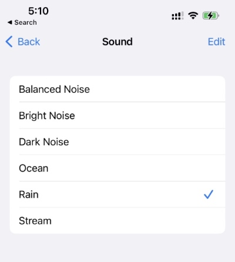

Фоновый шум
Оказалось, что уже несколько версий iOS умеет генерить разный фоновый шум:

Спрятано это все в Settings → Accessibility → Audio/Visual → Background Sounds.
Я по этому поводу запилил шорткат, который умеет включать этот шум на указанное время (про "шорткаты" или "команды" можно прочитать тут).
Включаю его перед сном или когда хочу чтобы ничего не отвлекало.
Заодно выяснилось, что шорткаты в iOS не идеальны)